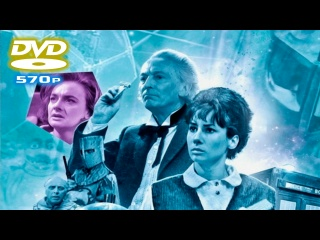
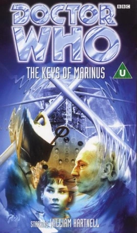
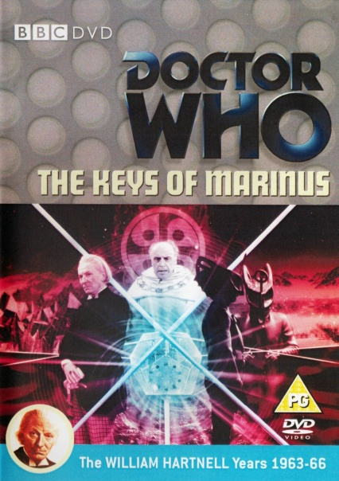
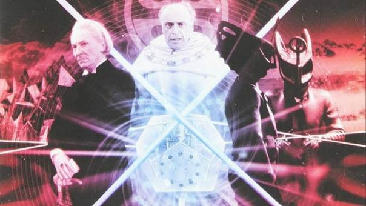
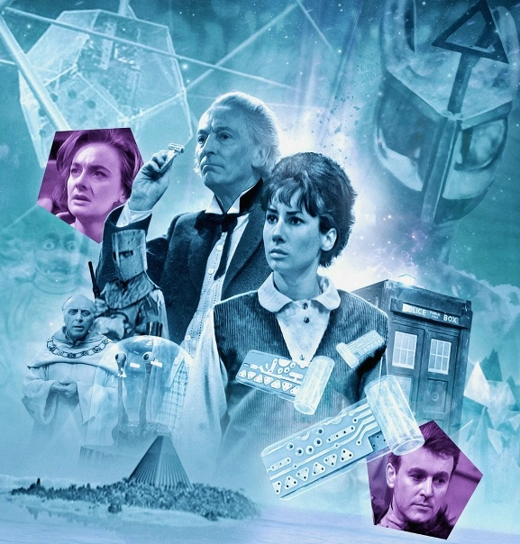
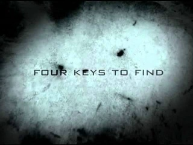

Субтитры: Русские и Английские |  |
|---|
| 1. Море смерти 2. Бархатная сеть 3. Кричащие джунгли 4. Снега ужаса 5. Смертельный приговор 6. Ключи Маринуса | Сохранились 16mm t/r |
|---|
| | |
«Ключи Маринуса» — это квест по разным уголкам планеты ради спасения цивилизации: Доктор и команда собирают ключи для машины правосудия, противостоя коварным вурдам. Каждая локация — от джунглей до ледяных пустошей — даёт отдельное мини‑приключение с новыми опасностями. Серия эффектно чередует экзотические пейзажи и напряжённые головоломки, показывая, как герои побеждают не грубой силой, а смекалкой. Формат «сборки частей» стал одной из запоминающихся находок раннего «Доктора Кто».
 VHS - март 1999 |  DVD - 21 сентября 2009 * Версия в нашей группе |
|---|


